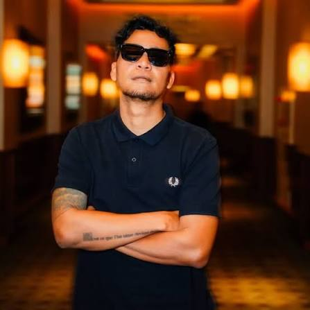

Profil & Latar Belakang
Sidharta Tata merupakan sineas berbakat asal Yogyakarta yang memiliki latar belakang unik di bidang seni rupa. Memulai langkah kreatifnya dari komunitas film independen lokal, ia mengasah kepekaan visualnya melalui penyutradaraan berbagai video iklan komersial dan film-film pendek yang artistik.
Kariernya melesat setelah karya-karya pendeknya berhasil menembus nominasi Festival Film Indonesia (FFI). Dikenal dengan gaya penceritaan yang intens dan visual yang berani, Tata kini menjadi salah satu sutradara layar lebar generasi baru yang paling diperhitungkan di Indonesia, khususnya dalam genre aksi, thriller, dan horor.
Karya & Pencapaian Utama:
- Sutradara Film Layar Lebar Bergenre Aksi & Horor Nasional
- Nominasi Film Pendek Terbaik di Festival Film Indonesia (FFI)
- Kolaborator Aktif dalam Ekosistem Film Komunitas Yogyakarta
Profil & Latar Belakang
Akhmad Fesdi Anggoro adalah seorang penata gambar (*film editor*) dan *filmmaker* profesional yang memiliki kontribusi besar dalam estetika visual perfilman modern Indonesia. Bagi seorang editor, merangkai potongan *shot* bukan sekadar menyambung durasi, melainkan membangun jiwa dan ritme dari cerita itu sendiri.
Dedikasinya yang tinggi di ruang sunting telah membawa namanya masuk ke dalam berbagai proyek sinema prestisius yang sukses, baik di pasar domestik maupun sirkuit festival film internasional. Kemampuannya menjaga struktur emosi cerita membuat ia sering dipercaya oleh sutradara papan atas tanah air.